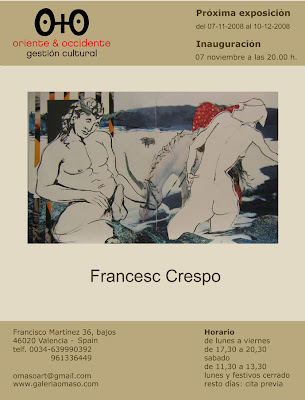
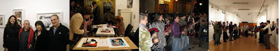
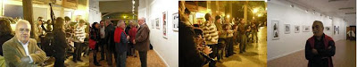

Exposición del 07-11-2008 al 10-12-2008
viernes, 7 de noviembre de 2008
{kind=link}

La Galería O+O tiene el placer de presentar la exposición individual del artista valenciano Francesc Crespo. De formación autodidacta comienza su trayectoria entre los años 1976 y 1980, realiza varias exposiciones locales y logra diversos premios de Artes Plásticas. Sus obras han sido expuestas en numerosas salas de exposiciones y galerías de arte de Valencia, Barcelona, Sevilla, Castellón, Portugal, Nueva York, Tokio y Taiwán. El trabajo artístico de Francesc Crespo juega con la realidad en lugar de reproducirla. Una obra de gran fuerza que indaga en la memoria en busca de las imágenes más significativas de la historia del arte. Un homenaje histórico donde vemos el reflejo de las cerámicas áticas o de los retratos renacentistas y contemporáneos, de grandes maestros como Antonello da Messina, Piero della Francesca y Manolo Valdés.
Pintar és per a mi un goig. La meva acadèmia són les hores perdudes, trobades entre les hores atapeïdes de quefers. El goig -ja us ho dic- del plaer de crear: plasmar les imatges que bullen des del cervell a les mans, per entre mig de la imaginació, els sentiments i els sentits. (Francesc Crespo)
{kind=link}

{kind=link}

Los protagonistas de esta muestra, compuesta por una veintena de obras, claramente son dos: el toro y el hombre. Las referencias a las astas del toro y al cuerpo desnudo del hombre se entremezclan con gran soltura. Composiciones llenas de erotismo y sensualidad, que en ocasiones muestran una sexualidad explícita. Obras que combinan de forma agresiva la pintura y el collages, donde los diferentes materiales utilizados juegan un papel importante. La integración de telas y papeles en el lienzo conceden una riqueza óptica y conceptual de gran intensidad. Con un gran interés por la técnica y la evolución de sus obras, Crespo, con su firme rotundidad en el trazo crea figuras escultóricas de sutiles volúmenes y luces.
La obra de Crespo se compone, con un especial equilibrio entre el pasado y presente del arte, de referencias a grandes pintores, diferentes periodos y culturas. Dentro de un barroquismo genuino podemos ver en esta exhibición alusiones a un mundo mítico de faunos y unicornios, además de citas a la Grecia clásica. Además se percibe una leve atmósfera que recuerda a algunos de los últimos grabados mitológicos y con una gran carga sexual realizados por Picasso.La configuración del lenguaje artístico de Francesc Crespo se basa en el color, la luz y la materia. Su obra discurre entre el Arte pop y el Arte matérico. Ensamblajes, mixturas, texturas y collages se unen a pinturas de un cromatismo plano, que expresan un intenso sentimiento de tactilidad. Muestra un camino de exploración de la intemporalidad de la imagen lleno de cromatismo e imaginación. Mucho más que el concepto importa al imagen, tratada como un símbolo lleno de luz, color y corporeidad. Figuras rotundas que se muestran en primerísimo plano como verdaderas y únicas protagonistas. Trabajos que responden a la apasionada búsqueda de una nueva dimensión expresiva, nutrida de diferentes materiales extrapictóricos y de libertad.
Oscar García García (Licenciado en Historia del Arte y especialista en valoraciones artísticas)